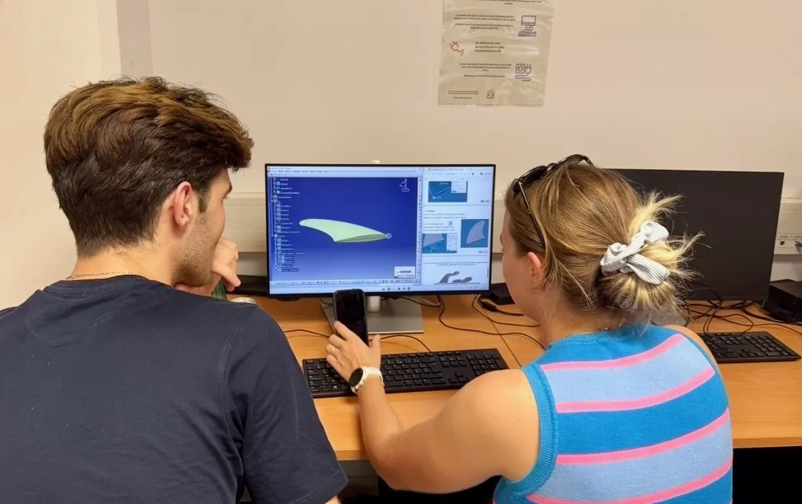
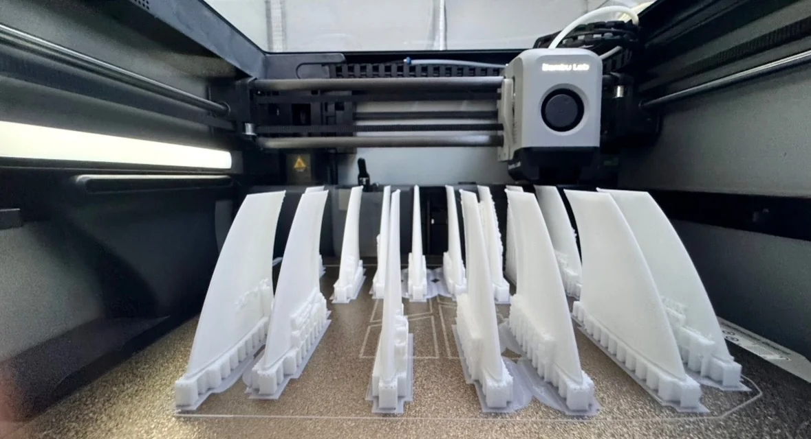
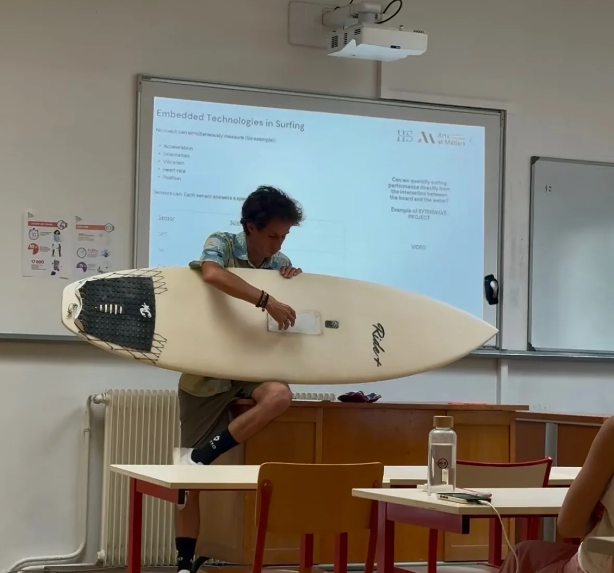
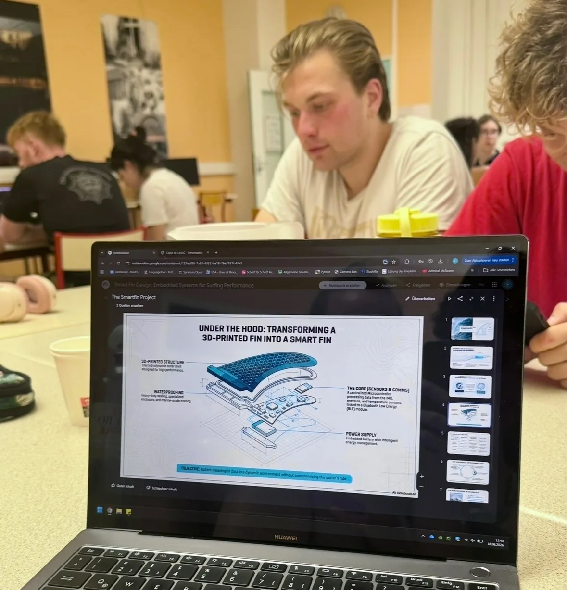
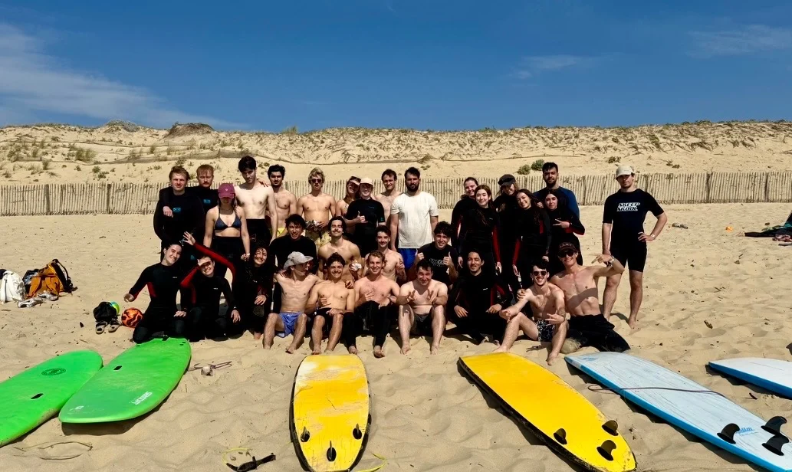

International course · Organisation
Surfboard eco-design
Organising an international course that connected environmental impact, surf-fin design and additive manufacturing for 20 European engineering students.
- Context
- BEST · Arts et Métiers, Bordeaux
- Period
- 2025–2026
- My role
- President, BEST Bordeaux
- Focus
- Course organisation · Eco-design · Additive manufacturing

A course built around a real object
“Surf on an Ecological Wave: Designing the Next-Generation Surfboard” brought 20 European engineering students to Arts et Métiers Bordeaux. The course connected environmental impact, material choices, hydrodynamic geometry and additive manufacturing.
It combined technical learning with time on the Atlantic coast and in Bordeaux: an opportunity for students to meet through a shared engineering subject.
Organising the entire course
As president of BEST Bordeaux, I coordinated a 35-member association and an eight-person executive board. We divided the year of preparation among four teams—academic relations, corporate relations, logistics and communications. I led meetings to keep decisions, deadlines and responsibilities aligned across them.
We built the programme with professors, approached companies and partners for financial support, managed a budget above €6,000, recruited volunteers and organised the practical side of welcoming 20 students from across Europe. I also represented Bordeaux at BEST’s international General Assembly, exchanging ideas with other local groups about the network’s direction.
The fin models and printed pieces below are participants’ work. My role was to make the teaching, equipment, partnerships and student experience come together.
A week linking design, making and surfing
Environmental impact and new materials
With Nicolas Perry, participants calculated the environmental footprint of surf equipment and discussed how measurement can guide material choices. A responsible-entrepreneurship session with Philippe Viot introduced the challenges of building an impact-driven venture, including Koz’s mycelium-based alternative to petrochemical surfboards.
Hydrodynamic geometry and 3D printing
Chloé Douin led a CATIA V5 surface-modelling workshop around NACA-profile fins. Students translated their geometry into printable files, prepared them in Bambu Studio and manufactured the fins. The screens, conversations and physical parts made the design-to-production process tangible.


Embedded technology on a real board
Kévin Lestrade presented a sensor-equipped surfboard and challenged the group to think about how embedded measurements could help understand performance. Participants developed concepts for a smart fin, considering sensors, waterproofing, power supply and data transfer.


Beyond the classroom
We also organised time on the Atlantic coast and in Bordeaux so the course would be an international exchange, not just a set of lectures. A final exam awarded one ECTS credit to all 20 participants.

Leading through other people
The technical week succeeded because many people owned different parts of it. I learned to run meetings that produced decisions, support volunteers when plans changed and bring academic speakers, sponsors and organisers together around one experience.
The strongest memory is human: 20 students from different countries learning, testing ideas and surfing together. Organising that exchange made me want to keep working in international teams.